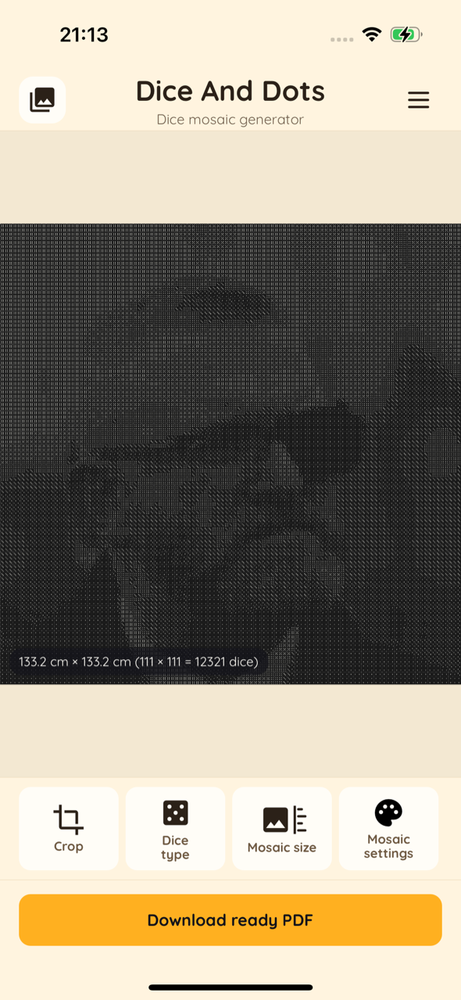
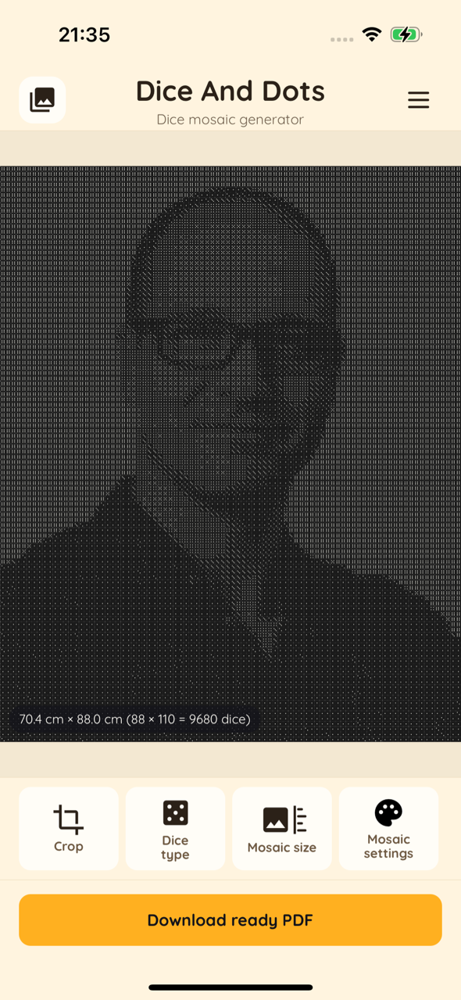
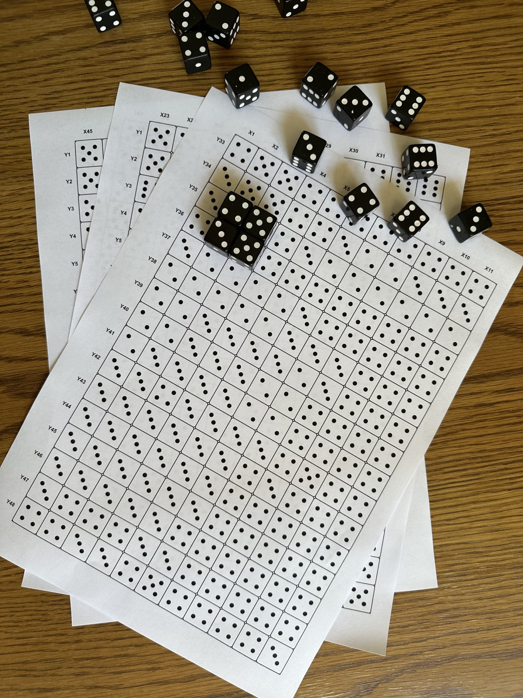
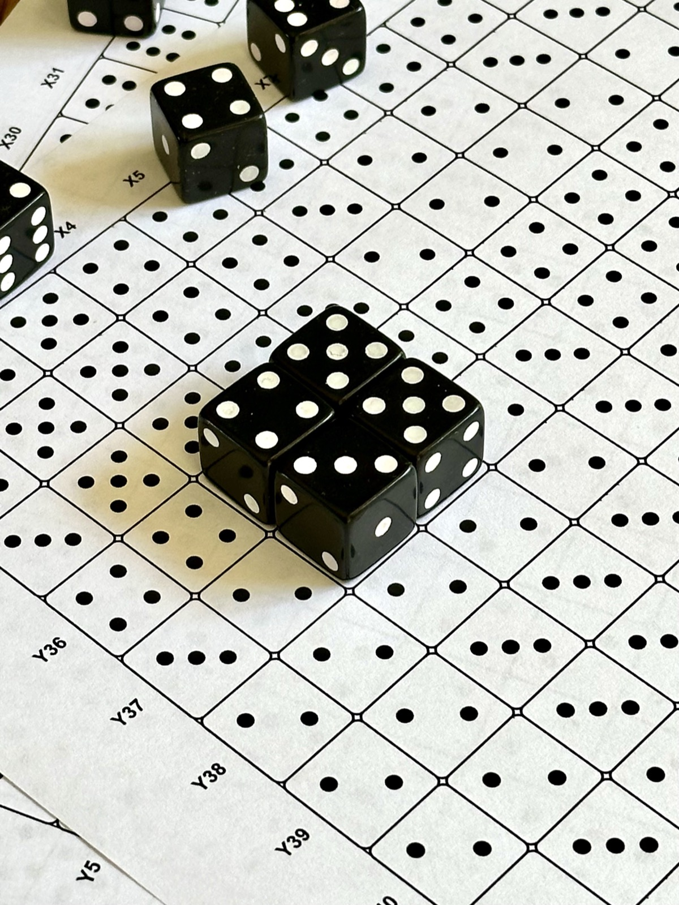
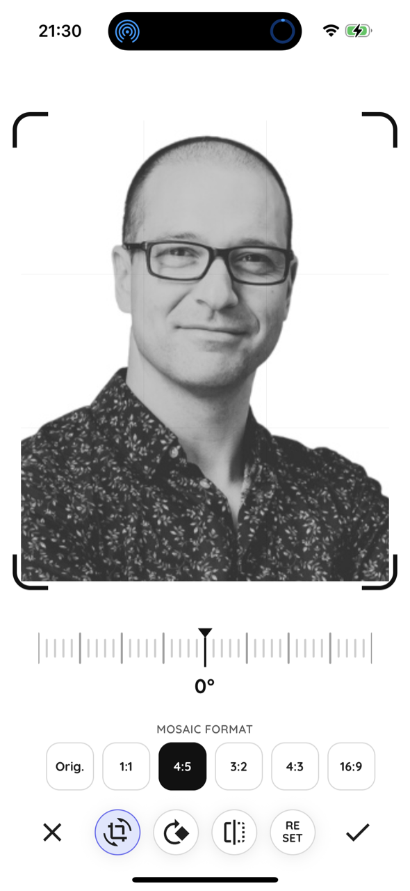
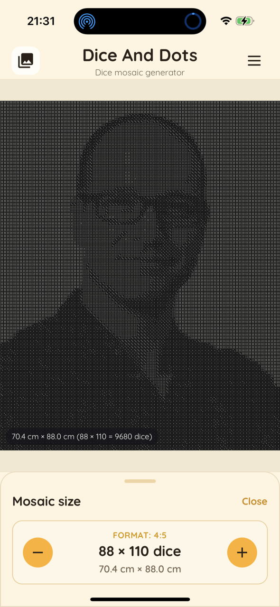
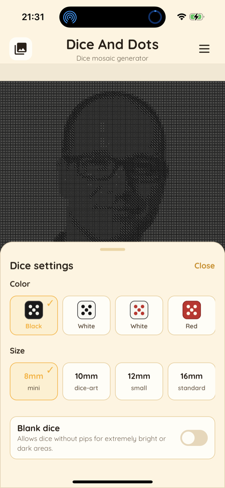
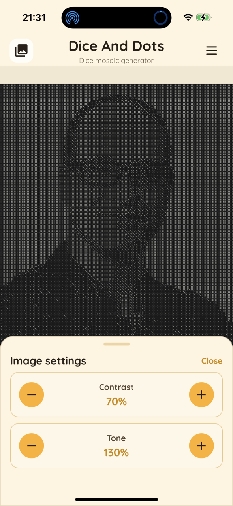

Turn your photos into real dice mosaics
Dice & Dots converts any photo into a print-ready plan made of dice faces. Print the instruction, place real dice on the matching squares, and build your own dice art — at true 1:1 scale.
No accounts · No ads · Everything runs on your device


From photo to mosaic in four steps
Everything happens right on your phone — no internet, no uploads.
Pick a photo
Choose an image from your gallery, take a new photo, or import a file. Crop and rotate to frame it perfectly.
Set the size
Choose dice size (8 mm mini to jumbo) and mosaic dimensions. The app shows the real-world size and total dice count.
Tune the look
Pick dice color, adjust contrast and tone, enable blank dice for bright or dark areas, and preview live.
Print & build
Export a print-ready PDF at 1:1 scale, print it, and place real dice on each square following the grid.
A printable instruction you simply follow
The app gives you a clear, numbered plan — so anyone can build the mosaic, no guessing.

A grid where every square = one die
Each cell of the printed sheet shows how many pips a die should show (1–6). You just place a real die showing the same number on that square.
- Dots printed in every cell tell you the exact die face
- X / Y coordinates around the edges keep you from losing your place
- Large mosaics are split across multiple A-format sheets

Printed at true 1:1 scale
The PDF matches the real size of your dice, so the printed grid lines up perfectly with the physical pieces. Tile the pages together and start placing dice.
- Snap dice into the grid row by row
- Works with standard pipped dice you can buy in bulk
- Glue the finished mosaic to a board to hang it on your wall
Your photo, turned into dice art
See what's possible — every image below started as an ordinary photo.


Everything you need to build dice art
Powerful options, all on-device and private.
Multiple image sources
Use your photo gallery, camera, or imported files as the source image.
Live mosaic preview
Real-time rendering shows exactly how your mosaic will look before you print.
Adjustable dice size
From 8 mm mini to jumbo dice — pick the scale that fits your project.
Many dice colors
Black, white, red and more color schemes to match the look you want.
Paper format presets
A4, A3, A2, A1, A0, B-series and custom mosaic dimensions.
Contrast & tone control
Fine-tune the image and add blank dice for very bright or dark areas.
Print-ready PDF
Generates a PDF with grid coordinates and axis labels, ready to print.
10 languages
PL, EN, ES, FR, DE, IT, PT, RU, NL and SV built in.
100% private
No accounts, no backend, no tracking. Your photos never leave your device.
Designed to be effortless




Free to create — pay only to export
Build and preview as many mosaics as you like for free. No ads, no subscriptions.
Single export
- Create and preview for free
- Export one print-ready PDF
- Pay only when you're ready
Lifetime unlock
- Unlimited PDF exports forever
- All dice colors and sizes
- Pay once — no subscription
Prices are shown in the App Store in your local currency.
Frequently asked questions
How does Dice & Dots work?
You pick a photo, choose your dice size and mosaic dimensions, and the app turns the image into a grid of dice faces. You then export a print-ready PDF and build the mosaic with real dice.
What do I print exactly?
You print an instruction sheet: a grid where every square shows how many pips a die should display, with X/Y coordinates so you always know where you are. Place a matching die on each square.
What dice do I need?
Standard pipped dice (the kind with dots, 1–6). You can choose the size in the app — from 8 mm mini dice up to larger ones — and buy them in bulk.
Is it really printed at 1:1 scale?
Yes. The PDF is generated at real-world scale so the printed grid matches the physical size of your dice. Just make sure your printer is set to print at 100% (no scaling).
Do you collect my photos or data?
No. All image processing happens locally on your device. There are no accounts, no backend servers, no analytics and no tracking.
How much does it cost?
Creating and previewing mosaics is free. You can pay per single PDF export, or unlock unlimited exports forever with a one-time purchase. No ads, no subscriptions.
Ready to build your first dice mosaic?
Download Dice & Dots and turn a favourite photo into a piece of art made of dice.